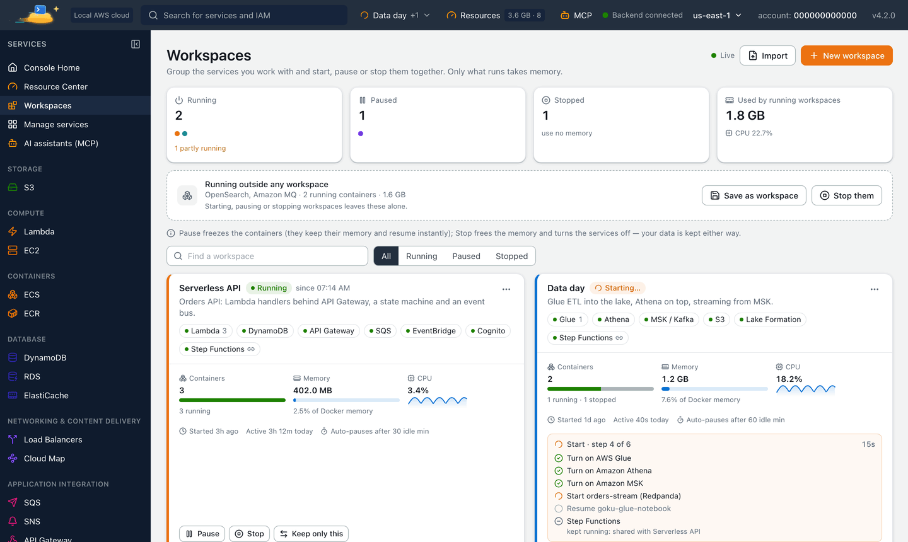
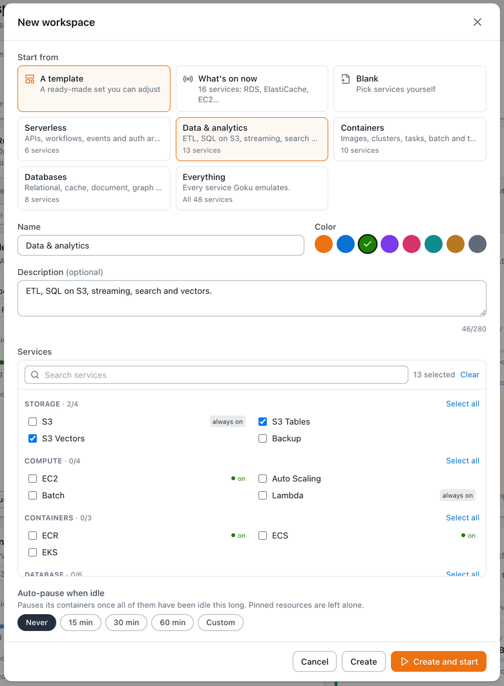
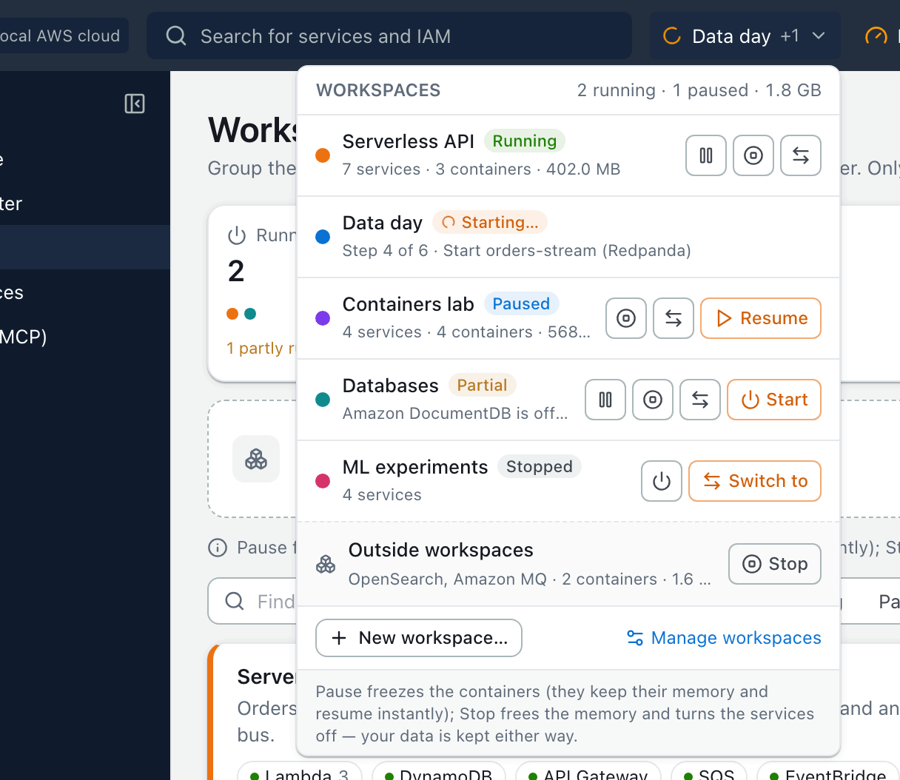
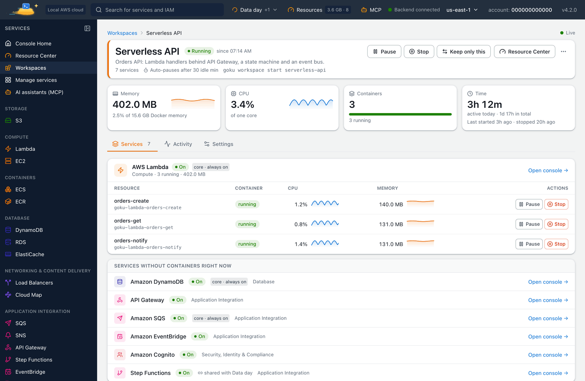

Save memory with Goku Workspaces. Group the local AWS services you work with together, such as Lambda, ECS and DynamoDB one day and Glue, S3 and Athena the next, and start, pause, stop or switch them as one from the console, the goku CLI or your AI assistant. Only what you use today takes memory.
Goku was formerly called Mimir. Same product, new name: the image is now tanujsoni027/goku (it was tanujsoni027/mimir-aws) and the command is goku. See old and new names.
On this page: What a workspace is · Actions · Install · Create · Start and stop · Auto-pause · Share · CLI · MCP · FAQ
Goku runs real engines in containers next to it. Each Lambda function, ECS task, RDS database, OpenSearch domain, MSK cluster and Glue notebook takes memory while it runs, and on a laptop that adds up. A workspace is a saved group of the services you work with together: start it when you need them, and pause or stop it when you don't.
Each workspace shows its state (Running, Paused, Stopped, or Partial with the reason), its memory, CPU and containers, the time it was active today, and a history of who did what: the console, the CLI, MCP or auto-pause.

| Action | What it does | Memory |
|---|---|---|
| Start | Turns the workspace's services on and brings back what it paused or stopped. Databases start through their AWS API, such as StartDBInstance. | In use |
| Pause | Freezes its containers. They resume instantly, and the services' APIs keep answering. | Kept, no CPU |
| Resume | Unfreezes what the workspace paused. | In use |
| Stop | Stops its containers and turns its services off. Databases stop the AWS way (StopDBInstance), so their own console stays right. | Freed, data kept |
| Switch to | Starts this workspace and stops every other running or paused one. | The others' is freed |
Workspaces need Goku 4.2 and goku CLI 0.6.0 or later. On macOS and Linux:
$ curl -fsSL https://tanuj24.github.io/goku/install.sh | sh
On Windows, in PowerShell:
PS> irm https://tanuj24.github.io/goku/install.ps1 | iex
Already installed? Run goku update --cli, then goku update. More options are on the install page.
Open Workspaces in the console's sidebar, http://localhost:8080/workspaces, and choose New workspace. Start from a template (Serverless, Data & analytics, Containers, Databases or Everything), from the services on now, or from a blank list, then pick a name, a color, the services and when to auto-pause. The Services page and the “Running outside any workspace” card also have Save as workspace.

$ goku ws create "Serverless day" --services lambda,ecs,dynamodb
goku ws create "Data day" --services glue,s3,athena --color teal
goku ws create today --from-current --auto-pause 30 # the services on now
Services are ids or names such as lambda, "Step Functions" or msk; goku services lists them. --template takes serverless, data, containers, databases or everything, and --color takes orange, blue, green, purple, pink, teal, amber or slate. A workspace's id is its name in lower case with dashes, such as serverless-day, and every command also takes the name, in any case.
$ goku ws start serverless-day # turn its services on (starts Goku too if needed)
goku ws pause serverless-day # no CPU; the containers keep their memory
goku ws resume serverless-day
goku ws stop serverless-day # free the memory, keep the data
goku ws switch data-day # start Data day, stop every other workspace
Each action shows its steps and the state and memory it leaves. goku ws ls shows them all:
$ goku ws ls
NAME STATE SERVICES MEMORY LAST USED
Data day stopped glue, s3, athena - 3 days ago
Serverless day running lambda, ecs, dynamodb 412.0 MB now
2 workspaces: 1 running, 1 stopped · 412.0 MB in use
In the console, the workspace switcher in the top bar does the same in one click, from any page.

Auto-pause pauses a running workspace once all of its containers have been idle for the time you pick: 15, 30 or 60 minutes, or any other time from 5 minutes to 24 hours. Pinned resources are left alone.
$ goku ws edit data-day --auto-pause 60
goku ws edit serverless-day --auto-pause off
Services and containers that belong to no running workspace are listed as Outside workspaces, with their memory and a Stop button. Starting, pausing or stopping a workspace leaves them alone. goku ws stop-outside stops them, and Save as workspace keeps them as a new one.

goku ws commandgoku ws is short for goku workspace. NAME is a workspace's id or name.
| Command | What it does |
|---|---|
goku ws ls | Every workspace: name, state, services, memory and last use, and what runs outside workspaces. |
goku ws show NAME | Its services (on or off, containers, memory, shared with), usage and recent activity. |
goku ws create NAME | --services a,b, --template ID or --from-current, with --color, --auto-pause MIN|off and --description. |
goku ws edit NAME | --add, --remove, --rename, --color, --auto-pause and --description. |
goku ws start NAME | Turns its services on and brings back what it paused or stopped. Starts Goku first when it isn't running. |
goku ws pause NAME | Pauses its containers: no CPU, memory kept, APIs still answering. |
goku ws resume NAME | Unpauses what it paused. |
goku ws stop NAME | Stops its containers and turns its services off: memory freed, data kept. |
goku ws switch NAME | Starts it and stops every other running or paused workspace. |
goku ws delete NAME | Forgets it; its services keep running unless --stop. Asks first on a terminal, and needs --yes in scripts. |
goku ws export NAME | The workspace as JSON, to stdout or -o FILE. |
goku ws import FILE | Adds a workspace from such a file (- reads stdin); --name NEW renames it. |
goku ws stop-outside | Stops the services and containers that belong to no running or paused workspace. |
Actions wait and show each step; --no-wait returns as soon as Goku has started one, and goku ws show NAME follows it. ls and show take --json. The command exits 1 when a step failed, 2 for an unknown service, template or color, and 3 when the console can't be reached. It talks to the console at http://localhost:8080; GOKU_CONSOLE_URL points it elsewhere.
Goku's MCP server has five workspace tools, so Claude Code, Cursor, VS Code and other MCP clients can drive the same workspaces:
goku_workspacesEvery workspace with its state, services, memory and CPU, what runs outside them, and the templates.goku_workspace_create goku_workspace_update goku_workspace_deleteSave services as a workspace, edit it, or forget it.goku_workspace_actionStart, pause, resume, stop or switch, waiting for the steps and returning each one.Ask, for example:
No. Stop stops the workspace's containers and turns its services off, which frees their memory. Buckets, tables, databases and everything else stay in Goku's data folder, and Start brings it all back.
Pause freezes the containers: they keep their memory, use no CPU and resume instantly, and the services' APIs keep answering. Stop frees the memory in Goku and in Docker and turns the services off; the data is kept.
It stays up. Pausing or stopping one workspace leaves a service running while another running workspace uses it, and the step says so.
No. The core services, S3, DynamoDB, Lambda, SQS, SNS, IAM, KMS, Secrets Manager, CloudWatch and Systems Manager, are always on. A workspace still pauses and stops their containers, such as those of your Lambda functions.
Yes. goku ws export NAME writes it as JSON (its name, description, color, services and options) for a repository or a teammate, and goku ws import FILE or the console's Import button adds it.